Monday 13th January Once again, our holiday started with me having to go for a PET scan. We left Kingsclere at midday and drove to Windsor. I was booked in for my scan at GenesisCare at 14:00 and we had booked a room at the Holiday Inn Express which was conveniently located next door. GenesisCare had said we could leave the car in their car park overnight so we parked there and then went and checked into the hotel. I had an hour to kill before my scan so walked into Windsor with Roz. She then went off to meet Aleks for coffee and I walked back to GenesisCare.
The scan all went OK. As with my previous PET can, it was a fairly boring couple of hours but everything was on time and I was out again by 16:00. I walked back into Windsor and met Roz and Alex in the Wetherspoons (The King and Castle). I had a pint in there while waiting for them to finish their coffees. Aleks then went home leaving us to go round a few pubs.
We left Aleks at the train station and went for a pint in The Windsor Castle. From there we walked across the river to Eton. The pubs there were either closed or lacking in decent beer options so we returned to Windsor and walked up to the Carpenters Arms for one. We went from there to The Two Brewers, a pub we had not been in before. This was probably the nicest pub we have been to in Windsor. We had a couple in there before walking back down the hill to Zizzi's where we had a couple of pizzas and a bottle of wine.
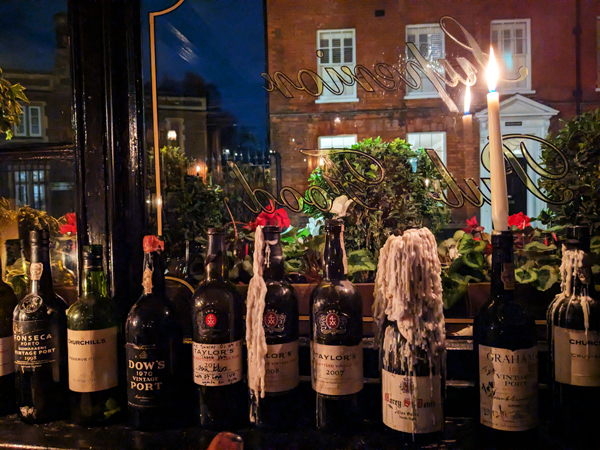
We decided that we should be reasonably sensible at this point and instead of going to more pubs, went back to the hotel where we had another couple of glasses of wine and a relatively early night.
Tuesday 14th January We were up by 6:30, had showers and checked out of the hotel. It was a drive of about 25 minutes to Heathrow, Terminal 4 where we had a wait of about 20 minutes before our meet and great driver turned up. We checked in, got rid of our luggage and were through security with plenty of time for our 10:25 Malaysian Airlines flight to KL. The flight departed on time and was not totally full so we had a bit more space than usual.
As with last year, the service was pretty good and we were given our first glasses of wine shortly after take-off. They kept the wine coming but we stopped drinking about half way through the flight so did not get too pissed. We had a meal a couple of hours into the flight and breakfast at about 4am Malaysian time. The flight landed at KLIA on time just before 7.
Wednesday 15th January KLIA was as bad as ever but we did get through the airport relatively quickly this year. We had to get on a bus from the satellite bit as the train is no longer running. We then had to clear immigration before getting our next flight to Langkawi. You are supposed to fill out an electronic form before getting to the immigration desks but the form is just about impossible to fill in using a phone. However, there were no queues at the desks and one of immigration officials just took all our details and stamped us into the country without bothering with the form. By 7:45 we were sat at the gate waiting for our next flight.
The connecting flight was also on time and we landed in Langkawi at 10:00. We had a bit of a wait for our luggage but by 10:30, we were outside at the taxi booth. We got a taxi straight to the Mercure at Cenang beach and arrived there by about 10:45.
There was a bit of confusion about which room we were getting and after a bit of discussion, we agreed to stay in a high up room for one night and then move to one of the poolside rooms tomorrow. Today's room was not ready yet so we went across the road to Ali's Bistro for our first roti canai of the trip. We bought a couple of bottles of wine from the duty free shop and returned to the hotel. We were told now that we would have two nights in the first room and move to a ground floor room on Friday but at least the first room was now ready.
We were given a room on the 7th floor facing away from the sea. This was probably a nicer room than the ground floor rooms but lacks the convenience of being by the pool. We were both totally knackered by this time so had showers and then fell asleep. I had not got any sleep on the flight and Roz had not slept much so although we did not want to sleep for too long, a couple of hours was needed.
By the time we woke up, the weather had deteriorated and it looked as if it had rained or was about to rain. We did both venture out at about 4. Roz went to the pool and I went for a short walk to complete my 10,000 steps for the day.
We had not been feeling great when we arrived but after our sleep and a bit of exercise, we were just about back to feeling 100%. We drank one of the bottles of wine sat on our balcony while trying to come up with some sort of plan for the four days in between leaving here and getting to Nai Yang. It is looking as if a ferry to Ko Lanta via Ko Lipe may be the best option.
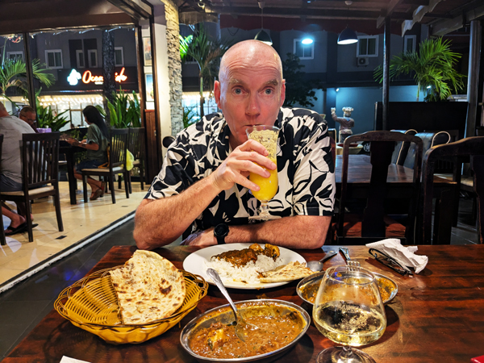
We went out to eat at Viva Italia where we had eaten last year a few times. We had a few cocktails and food from the Indian upstairs. The weather had not been great since we arrived here and by the time we had finished eating, it was raining heavily. We left the restaurant and made it as far as Cinnamons Bar and had a few glasses of wine while waiting for the rain to clear. Eventually made it back to the hotel having had slightly more alcohol than we had planned. We had one more drink on the balcony before bed.
Thursday 16th January Neither of us were too badly hungover so we were able to get up and go across the road to Ali's for breakfast. We had a quick look at the beach and asked in a couple of travel agents about ferry tickets to Lanta. No-one seemed to be able to sell them and our banana shake place was closed so we returned to the hotel empty-handed.
The weather was pretty poor again today but it was sunny enough to go the pool for an hour once back at the hotel. We left when the rain started then went back for another 30 minutes or so but gave up on sunbathing after the second shower. This was probably long enough in the sun for our first day here anyway.
We went out and got banana shakes at lunchtime and it was just about dry enough to sit on our balcony to drink them. I went to the gym in the afternoon and managed a 5km run. Roz went for a swim in the rain.

We had planned to eat at Royale India tonight as we were not drinking but it was closed due to some sort of private function. Instead we returned to Ali's and had very good currys again. Back in the room by 8:30.
Friday 17th January We were up early again so went over the road to Ali's for breakfast. We asked at reception about moving rooms and as usual, there was a lot of confusion. We went and sat by the pool for an hour and by 10:45, they had sorted it out and we were able to move into room 014, one of the rooms with pool access. It is exactly the same as the room we were in last year and just round the corner from it.
We had another 30 minutes or so by the pool as the weather was better today than it had been so far on the trip, and then went into Kuah. We got a taxi from outside the hotel and were dropped at Eagle Square near the ferry terminal. We went straight into the terminal and bought tickets for the 9:15 ferry to Ko Lipe on Monday.

We had a wander round the eagle statue and then walked a mile or so through a slightly odd park to the Maha Tower. We had thought about going up it but it was getting a bit cloudy by this time and neither of us were that enthusiastic any more. Instead we walked into the centre of Kuah trying to work out if there was anything we recognised from when we were here in 1990. We eventually gave up on this and got a Grab taxi back to Chenang.
We had banana shakes on our new balcony and tried to book accommodation in Lanta. However, the place that we were both keen on had sold out since yesterday which was a big disappointment. It also started raining again. Roz went for another swim and I did another 5km on the treadmill.

We had another evening similar to Wednesday. We started on the wine on our balcony at 7ish and got through a bottle before walking to Viva Italia. We had another very good Indian meal in there with a few cocktails before going to Cinnamons Bar for a couple of glasses of wine. We had a couple more drinks back at the room and got to bed sometime after midnight.
Saturday 18th January Breakfast at Ali's followed by a few hours by the pool. I went for a walk at 1ish. I took out money and changed some of it into Thai Baht as we will need this to enter Thailand on Monday. I also bought nibbles and wine for tonight and returned to the pool with our lunchtime banana shakes.
We managed to book accommodation for our stay in Lanta. It is all a bit unclear as to how good this would be but we seemed to be running out of options so needed to get something booked. No rain this afternoon so we were able to return to the pool again after getting this done. Once again, at 3:30ish, I went for a run in the gym and Roz swam in the pool.
We had a slightly earlier start to the session tonight as I was hoping that there may be a chance of watching some of the Cardiff v Swansea game somewhere. We had a beer and a few glasses of wine on our balcony before walking to Viva Italia. The curries were particularly good tonight, especially the squid vindaloo.
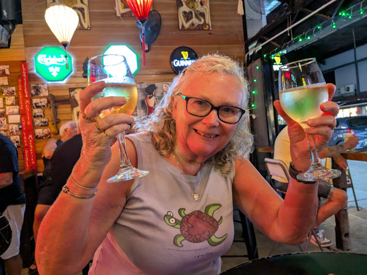
I had a couple of cocktails again while Roz stayed on the wine. We stopped on the way back at Cinnamons by which time Swansea had started conceding goals so I had lost interest in going back to try and watch the game. We had a few glasses of wine and then stopped at the duty free shop to buy more to drink on the balcony. An enjoyable night again.
Sunday 19th January I was slightly more hungover this morning than on previous mornings but we were still up in time for breakfast at Ali Bistro. We spent a couple of hours by the pool and then went for a walk along the beach stopping to buy our banana shakes on the way back.
We did not do much for the rest of the afternoon except lay around by the pool or sit on the balcony. My 5km run was hard work today due to the amount we have drunk the last two nights but I just about made it.
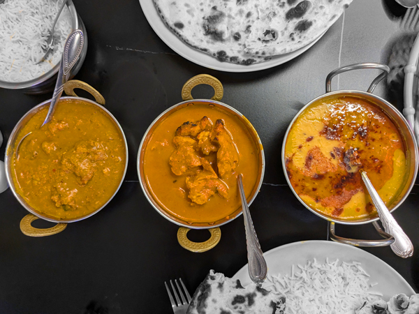
We were not drinking tonight as we are travelling tomorrow and needed a night off anyway. Royale India was open again so we ate there and had another superb meal. The food in Langkawi has definitely been a highlight of our stay here again. We were both totally knackered by the time we finished eating so went straight back to the hotel for an early night.
Monday 20th January We were woken by the alarm at 6:30 and checked out of the hotel by 7:00. We ordered a Grab taxi which took about 15 minutes to arrive and we were back at Kuah Ferry Pier just after check-in opened at 7:45. We had to check in and get boarding passes as well as being given our arrival cards for Thailand. It all seemed a bit chaotic but seemed to work quite efficiently and about 10 minutes after getting there we were leaving with all our paperwork.... and our stickers.
We found a restaurant in the terminal building that did Malaysian food so were able to get our roti canais before wandering down to the departures area. Boarding started at about 8:30. Again this all seemed a bit disorganised and immigration was very slow but we had managed to get close to the front of the queue and were through and on the boat relatively quickly. Surprisingly the ferry pulled out exactly on time at 9:15.
It was a two hour journey to Ko Lipe where we arrived at 10:15 Thai time. We were taken off the ferry by long-tail boats and then had to queue to get our passports back (we had had to hand them in before getting on the ferry). This was another slow process as there was only one person distributing the passports and she was also selling boat tickets to onward destinations. This did not work out too badly for us as we wanted to buy boat tickets and had been in the first long-tail so again, were close to the front of the queue. We were able to buy tickets for the 12:30 speedboat to Lanta, got our passports back and proceeded to immigration.

Immigration was very quick due to the bottle-neck at the previous stage. We got our passports stamped, paid our national park fees, collected our luggage and were away from all the chaos by 10:30. We walked along the beach to where the next ferry departed and found a restaurant where we could sit looking at the beach while waiting for the speedboat. This also left on time. We had a brief delay as we ran out of petrol just outside Saladan but this was resolved quickly and we were at the Saladan pier by about 15:30 which was as good as we could possibly have hoped for at the start of the day.
We started walking towards Salatan Resort where we had booked a room for tonight. We eventually got a tuk-tuk that would take us for a reasonable price and we were checked into our room before 16:00. It is all a bit basic compared to staying at the Mercure but it is in a nice location and everything seems to work. Lanta seems to be very busy at the moment and we had not been able to get anywhere we wanted for four consecutive nights. We will have one night here before moving on for the rest of our stay here.
We spent an hour or so by the pool and then went down to the beach in front of the pool to watch the sunset. We then walked back along the beach into Saladan and through the grounds of the hotel we had wanted to book initially for our stay here. We took out money and walked round the bit of town we had not seen yet before going to eat at Lanta Seafood. We had a very enjoyable meal there before walking back to the resort for another early night.
Tuesday 21st January There was a free breakfast included with our room. Not a huge selection but there was tea and toast so enough to keep us going. We had to check out this morning but we quite like the pool area here so spent an hour or so by the pool before checking out at 11:45.
The hotel we had booked for the next three nights was Coco Cape, a mile away just North of Kaw Kwang. We got there just after midday and were shown straight to our room. We had been a bit unsure what to expect when we booked a room here but it turned out to be an excellent choice. We had booked a "Honeymoon Suite with Sea View". The room itself was very nice looking out over the Northern Tip of the island and the balcony was excellent. It is totally private with plenty of space, an outdoor shower and a spa bath. The swimming pool had looked very nice as we walked past it but it was also very crowded so I think we could be spending quite a lot of the next three days on the balcony!
After spending an hour or so unpacking and generally sorting ourselves out, we went out for a walk. We wanted to see what had happened to Kaw Kwang Beach Resort. We had stayed there when we first came to Lanta in 2000 and it is probably the place we have stayed in more than any other in Thailand. We knew it did not appear to exist any more but thought it may have been taken over by an upmarket resort.
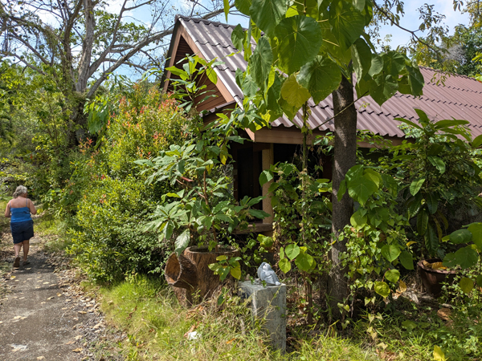
As it was, it was still there in the same place but completely overgrown. The buildings were all still there and we saw one of the owners in what used to be the restaurant. He told us that it closed three years ago and is now up for sale. It was a strange feeling wandering round the grounds seeing the rooms we had stayed in so often still with furniture on the balconies, and seeing it all so overgrown. All quite sad but at least it was all still there and hopefully it can be sold and restored.... although it will probably be sold and turned into another luxury resort.
We walked through the resort to the beach, then started looking for something for lunch. We walked past Twin Bay Resort and then bought food from one of the street stalls in the road there. We ate on the wall by the sea there and it was a surprisingly tasty meal. After banana shakes on the beach, we walked back to Coco Cape.
We spent most of the rest of the afternoon on the balcony including an hour or so in the bath spa. At 4:30 I went for a run along the beach. It was a bit tougher than running on a treadmill in an air-conditioned gym but I just about managed my 5km again. Roz was in the pool when I got back and I spent about 15 minutes in it trying to cool down. Coco Cape is a very good place for watching the sunsetting. There are good views from the bar, the restaurant and the pool and also from our balcony. The view from our shower is also not bad.
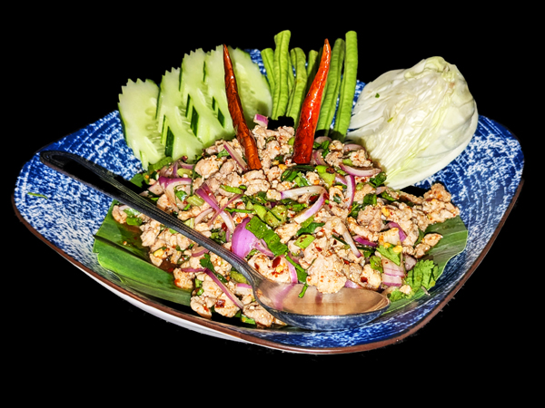
We were not really sure where to go and eat in Lanta as it is seven years since we were here last and just about all the places we used to eat are no longer there. We decided to try the Coco Cape restaurant and the food was very good again. Another quiet night and we were back in the room by 8:30
Wednesday 22nd January We did not have breakfast included here so we settled for tea and biscuits on the balcony for breakfast. It is a lovely place to sit although watching all the dive boats going out for the day was all a bit sad again. At 9ish, Roz went to the pool and I walked into Saladan. I had a wander around, made a few inquiries about taxis for Friday and bought a few things for tonight. After walking back to the resort, I joined Roz by the pool for an hour.
We returned to where the food stalls were yesterday for lunch but the stalls had not yet appeared so we returned to the resort restaurant for lunch. By 1:30, we were back on the balcony. I went for my run at about 4:15. It was slightly cooler today so it was a bit easier than yesterday and I managed to run all the way this time.
Today was the 35th anniversary of our first date in Sydney 35 years ago. We usually try and go for a pizza on this day but after a lot of dithering decided to stick with Thai food. We started drinking on the balcony at 6:30 while watching the sunset. We drank a bottle of the wine we had bought from Langkawi and then got a tuk-tuk into Saladan where we booked a taxi to take us to Nai Yang on Friday. We did look at a couple of pizza options but neither appealed that much so we returned to Lanta Seafood.
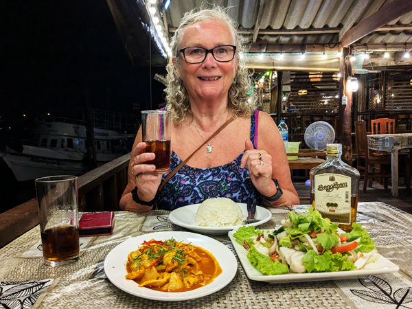
We had very good meals again with our first Sang Som set of the trip. We got another tuk-tuk back to the resort buying a large bottle of Sang Som on the way. Back at the resort, we managed to lock ourselves on the balcony somehow and had to get someone from reception to come up and rescue us. Once this was resolved, we drank just over half the bottle before getting to bed sometime around midnight.
Thursday 23rd January We did not do a lot all day today. We have both felt the effects of last nights alcohol with Roz probably more badly affected than me.
I went for a walk into Saladan at 10ish but had to go back to sleep when I got back to the room. We both made it to lunch in the restaurant at about 1:30 but Roz could only manage half a sandwich before returning to the room. We did make it briefly to the pool in the evening but a lot of the day was spent lazing around in the room or on the balcony.
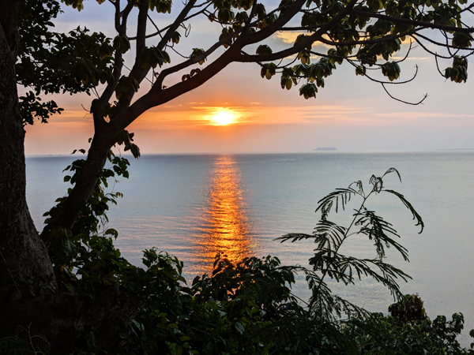
Neither of us could be bothered to go too far in the evening to eat so we had our second meal of the day in the resort restaurant and were back in the room by 8.
Friday 24th January We were up earlier today and both back to feeling 100%. After our morning tea, I walked the full length of the beach while Roz had coffee on the balcony and then went for a swim. Surprisingly, at this time of morning the beach was quite busy with loads of people walking, running and various fitness activities. It was a nice way to start the day.
After showers, we checked out at 10:50 and went and had breakfast/lunch in the restaurant. We had booked a taxi for 11:30 and the car was there by the time we had finished eating. The drive of just over four hours was quite enjoyable. It was a very comfortable car and it did not feel like a four hour journey. There was no sign of the bridge joining Lanta to the mainland having been started so we were still on the old ferry for that bit of the trip but everything else was fairly smooth. We arrived at Nai Yang Beach Resort at 15:20.
After the traditional argument about an unwanted room upgrade, we were given room 8310 in "The Sea Turtle" block. We have not stayed in this block for a few years but have always quite liked the rooms here. We were given one of the rooms on the top floor, which are not as good in my opinion but it was in a good position with a better view than the last time we were here. All in all we were both quite happy with it.
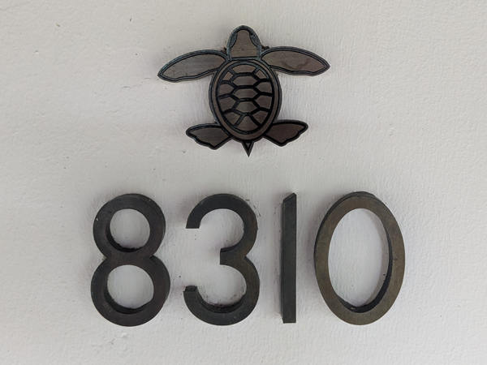
We went out for a walk around and to buy some things for tonight before returning to the balcony with banana shakes. I went back out to buy the alcohol just after 5.
We started drinking on the balcony at about 6:45. We drank a bottle of wine before heading out. One of the two restaurants we ate in a lot last year was closed but the other one, Rotcharin Seafood, was still there so we ate there. We had one bottle of Sang Som with us and inevitably, I went to get another when we finished that one. We stayed drinking on the beach after the restaurant had closed and it was another very enjoyable evening although neither of us remember too much about walking back to the hotel.
Saturday 25th January We woke up with no repeat of the hangovers we had a couple of days ago. We were able to get up and go for breakfast (included) and then spend a few hours by the pool albeit in the shade.
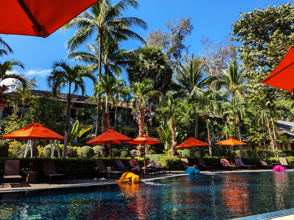
I went for a walk at about 1:30 and met Roz to buy lunch on the way back. Had another hour or so by the pool in the afternoon. I went out to stock up on Sang Som and water again at 5ish but that was about it for today.
We had a similar evening to yesterday. We had a few extra drinks on the balcony while watching the first half of Norwich v Swansea. We could not find anywhere showing football (although we did not try that hard) so went to eat at the restaurant further along the beach from where we were last night. After finishing our Sang Som, we returned to the room to watch the second half of the Sunderland game. We managed to resist the temptation to go out and buy more alcohol when we ran out completely so went to bed when the football finished.
Sunday 26th January Another quiet day. We had breakfast then Roz went to the pool while I went for a walk. I walked further along the beach than I had been before and got as far as the airport runway. I spent about 30 minutes on the beach there with a few hundred other people all taking photos of the planes coming in just above our heads.
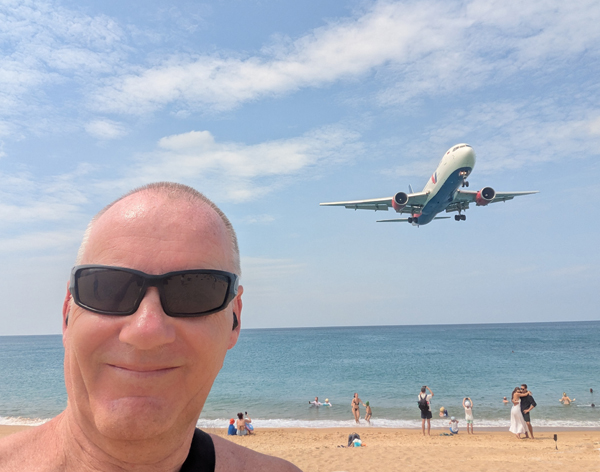
Did not do much else for the rest of the day. It was quite similar to a lot of Sundays. We had lunch on the balcony consisting of banana shakes and kit-kats. Spent the rest of the afternoon by the pool or in the room. Neither of us were particularly hungover today but we were both quite knackered by the evening. We were not bothered about going out to eat so got a couple of pizzas from Lee's across the road. We ate them on the balcony and had an early night.
Monday 27th January Another quiet day. After breakfast, I walked round to the airport and back before joining Roz at the pool. I did not want to spend too much time in the sun today as I got burnt walking on the beach yesterday, so spent most of the rest of the day in the room or on the balcony.
We had left over pizza for lunch. During the afternoon, we applied for our Cambodian e-visas. We were a few dollars short of being able to get visas on arrival and this was probably a more sensible option anyway but it was disappointing to miss out on the chance to get the visas in our passports!
We did made it out briefly in the evening. We booked a taxi to take us to the airport tomorrow and bought another take-away from over the road which we ate on the balcony.
Tuesday 28th January A rare healthy start to the day. I was up by 6:45 and went out for a 5km run. Roz went to the pool for a swim. After we had both finished, we went to breakfast and then had a couple of hours to kill before checking out. Roz went back to the pool. I stayed in the room.
We went down to reception at 11:10 and were checked out remarkably quickly so had a 15 minute wait for our taxi. Just as the taxi was turning up, we found out that our 13:20 flight had been delayed by an hour. We were at the airport by about 11:40, checked in my rucksack, collected boarding passes and went through security to wait.
Our plane eventually appeared at about 14:30 and departed just after 15:00. The flight time was just over 1 hour 20 minutes. We approached Don Muang from the South which was unusual but meant that we had good views of central Bangkok as we came in. We were taken by bus to the terminal, a journey that took far longer than it should have done. However, I got my luggage fairly quickly and there were no queues at all for the taxis so by 17:00, we were on our way into Bangkok. For the first time we can remember, the taxi did not use the expressway as there was not that much traffic. It was still heavy round Victory Monument but we were at the hotel before 18:00.
We are in Bangkok for two nights and have one night booked at The Ibis and one night at The Mercure. The Ibis was quite a bit cheaper and we will not need the added benefits of the Mercure (i.e. gym and pool) tonight. We checked in, had showers and then went across to the MBK.
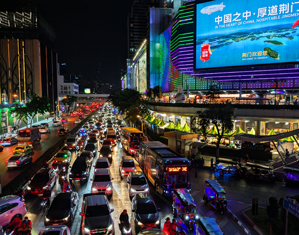
After an unsuccessful look for new running shoes, we went down to Ban Khun Mae which was in the same location as last year. We had a bit of a wait until we got a table in the only nice part of the restaurant but once inside, the food was as good as ever. After eating we had a bit of a wander round looking for somewhere to get passport photos but a lot of the places were closed so we gave up and returned to the hotel.
Wednesday 29th January We were up early again this morning and, after our cups of tea, headed out to do our sight-seeing. The only thing we had planned to visit was Wat Arun. Neither of us had been there before. We nearly went in last year as we ended up at the ferry docking point there but it was too hot and there were far too many people around so we did not bother going in.
This time, we got a Grab taxi from the hotel (฿140) and were there as it opened at 8am. This was a very good sight and a very good time to go and see it. We were some of the first people in so there was hardly anyone around as we went round for the first time. The main tower itself is very spectacular and the surroundings also good. We spent about an hour wandering round taking pictures before going outside the complex for breakfast.
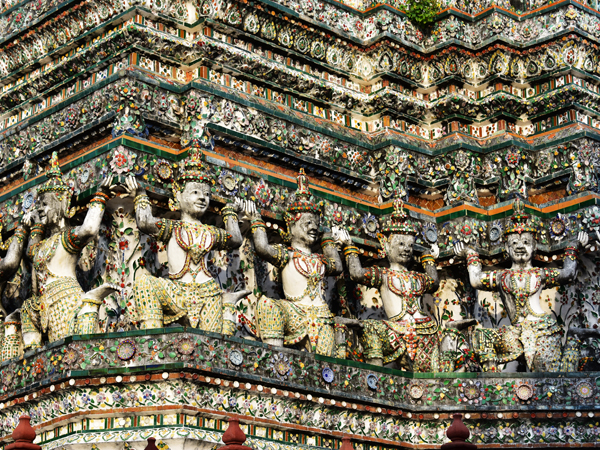
By the time we went back in, the crowds were already starting to build. There were a lot more people around although a lot of them had hired traditional Thai costumes to be photographed in which was all quite entertaining. By the time we had gone round the temple again, it was time to leave.
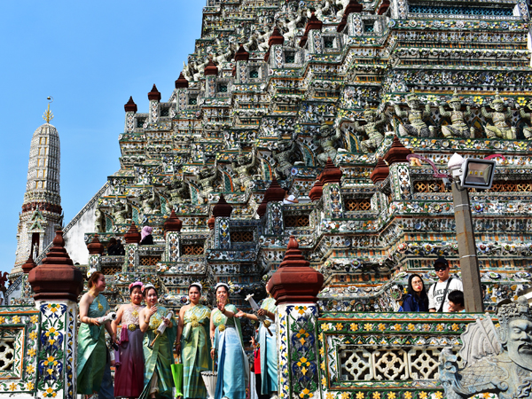
The company that runs the public ferries along the river had stopped them calling at Wat Arun, something that caused us a lot of confusion last year. The same company, however, runs tourist ferries which run the same route and do stop there..... and cost a lot more. This is a complete rip off for tourists. There was another company there which also ran a tourist ferry to where we wanted to go. This was not too badly priced so we got one of those along the river to the BTS station at Sathorn. Not quite a traditional Bangkok river experience but we had the whole air-conditioned boat just about to ourselves and it was a lot less hassle than last year.
We got the BTS to Siam and went into the Paragon shopping centre where we found a camera shop that was able to do our passport photos for us. We had to wait about 25 minutes to get them but we now have just about everything we need to get into Laos and Cambodia. Once we had collected the photos, we walked back to the Ibis.
We then had a couple of hours of sorting a few things out. Roz had to send an email regarding the sale of one of the Ruddington properties and I had to get photocopies of our passports and print out our Cambodian e-visas - all of which took quite bit of time. In the middle of doing all this, we moved from The Ibis to The Mercure. Both hotels are in the same building but again, it all took longer than it should have done.
By the time this was all sorted out, it was about 3:30.... and we were planning on going out at 6. Roz went to the pool but I decided to go straight to the gym so I could go for a run and have time to cool down again.
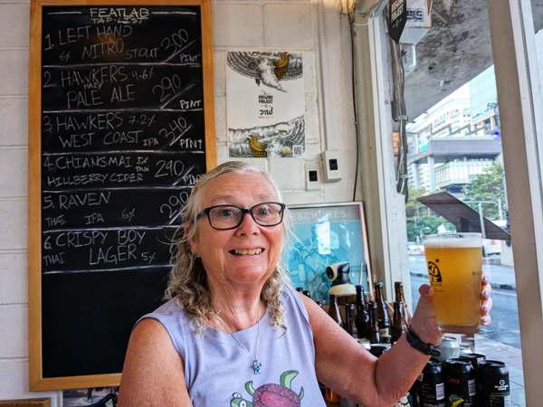
At 6, we walked to Feat Lab. This craft beer bar had not changed at all since we were here at Christmas 2018. Although it is relatively expensive, it was very enjoyable to have a few good pints of beer and it was easy to see how we got so pissed the last time we were there. After five pints between us, we walked back to the MBK where we only had to wait a few minutes for a table at Ban Khun Mae. We had a bottle of Sang Som with the meal and then bought another when we got back to the hotel. We drank the second bottle in the room before getting to bed at around 11:30
Thursday 30th January Roz went out to buy chocolate buns for breakfast and then went up to the pool. I went back to the Paragon shopping centre to change some Euros into Baht and then spent half an hour or so wandering round the Siam Square area. We met back in the hotel at 11:45 and went back to the MBK food hall for lunch.

Back at the hotel, we both had an hour or so by the pool and then started getting ready to leave. We had managed to get a late check-out until 4pm as we were due to leave Bangkok by train at 19:25. Just before 4, we went down and got our welcome drinks before checking out. We had our drinks and then ordered a Grab taxi to take us to the train station. The traffic was heavy and the five mile journey took 37 minutes but we were still at the station more than two hours before we could board the train.
This was the first time we had used the new "Krung Thep Aphiwat Central Terminal Station" which is now the departure point for all long distance trains from Bangkok. Inevitably, it was nowhere near as interesting a place to wait as the old station but it was comfortable enough with plenty of places to sit and the time there went reasonably quickly.
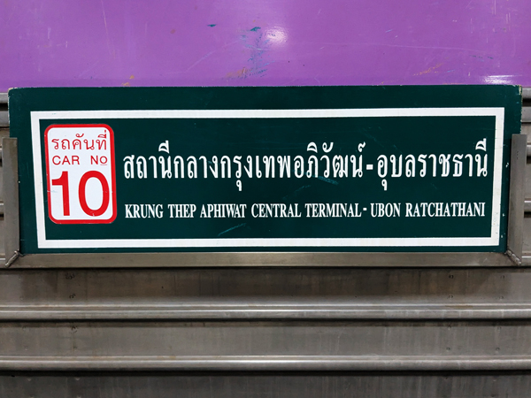
We had booked 2nd class air-con sleeping compartments on the 19:25 train to Ubon Ratchathani. Boarding started at 19:05. We think it is about 25 - 30 years since we have been on one of these trains but they do not seem to have changed much in that time. We found our seats and the train pulled out of the station on time. Not long after we had departed (just after we had finished our pot noodles) they came and made up the beds. Once the beds were made, Roz went up to her bunk and I read until I finished my book at about 11.
Friday 31st January The beds were pretty comfortable but the train was quite noisy and I woke up a lot in the night but still managed to get 4 or 5 hours sleep. I was fully awake by about 4 and Roz woke up an hour or so later. The train got into Ubon Rachtchathani a few minutes after the scheduled arrival time of 6:15.
We had a few options of how to get to our next destination - Pakse in Laos. We knew there were buses that would take us all the way but the bus station was about 10km from the train station and we would have to wait at least a couple of hours in the hope that we could get on the 9:30 bus. In the end we ordered a Grab taxi to take us to the border. This was a journey of about 90km. The taxi turned up immediately and the driver told us to cancel the Grab booking and he would take us for ฿600. This was a very good value journey and we were at the border as it opened at 8.00.
We had to buy Laos visas but we were the only ones doing this so it did not take long. We got through immigration, changed some money into Kip and then started looking at options for getting to Pakse. Eventually someone came and offered to take us for ฿200 each. We thought this would be in a private car so we accepted the offer. In the end, it was a shared minivan so a bit overpriced but it got us into Pakse by about 9:15 and we had done the whole journey from the station for less than £25 which we were more than happy with.
We crossed over the Mekong into Pakse and we got out of the van at its first stop. We think he would have driven us to our hotel but he did not know where it was and we were only 500m away so decided to walk. After breakfast from 7-Eleven again, we walked to Le Jardin Hotel. They told us to wait by the pool and by about 11 we had the key to our room. It was another very nice room in an old colonial style building. Ideal for our one night here.
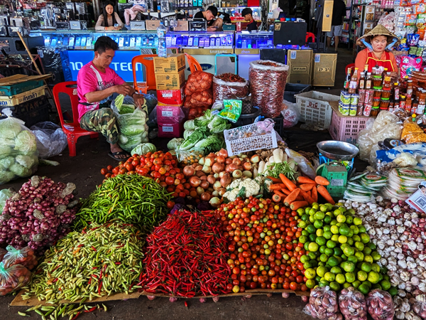
We spent an hour or so by the pool or in the room and went out for a look around just before 1. We are staying a bit out of town but we are close to the Talat Dao Heuang market which is second on the list of sights in Pakse according to Lonely Planet. The market was very big but not that interesting compared to some markets we have seen particularly as a lot of the fruit and veg stalls were shutting down for the day. We bought a couple of baguettes containing some sort of unidentifiable meat and returned to the hotel to eat them. They tasted better than they looked.
After lunch, Roz went back to the pool and I fell asleep in the room. We went out again at 3:15. The main reason we had decided to stay in Pakse for a night is that I had seen pictures of Wat Phousalao and was quite keen to visit. It was a walk of just over a mile over The Mekong to get to the base of the hill that the temple is on followed by a walk up a very steep flight of steps.
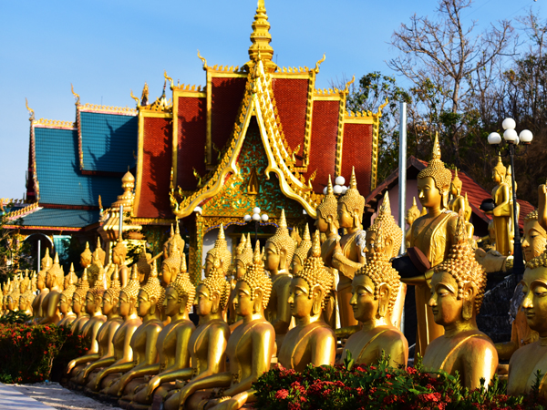
At the top there is a single large Buddha statue looking out over The Mekong but it is all the smaller Buddhas behind it that I was keen on seeing. The picture I had seen had shown about 15 or so but there were hundreds of them in rows on the side of the hill. There were a couple of temples up there as well and also superb views looking back down at the river and Pakse. All in all, it was a very enjoyable area to wander round for 45 minutes or so.
Once we had spent enough time photographing Buddhas, we walked back down the steps, across the river and back to the hotel. Because the hotels location is a bit out of town, they run a shuttle into the centre every evening at 7. We got the minibus in and went for an Indian meal. We thought it may be the same chain of restaurants we had eaten in last time we were in Laos but worked out once we were sat down that it wasn't.
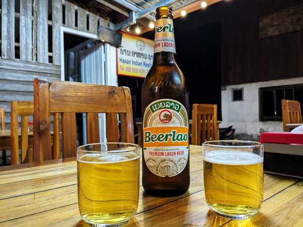
The food was quite good without being very authentically Indian. We had a couple of BeerLaos with the meal and another at a hostel while we waited for the return shuttle. We were back in the hotel by about 9:20.
Saturday 1st February We had a very good breakfast included with the room. After eating, Roz went to the pool for half an hour and I walked back to the market to find out where the songthaews to Champasak departed from. We knew that they went from somewhere in the market but as they stop at midday, it had not been obvious yesterday where the bus station was. I managed to get some money out of an ATM (about the eighth attempt) and walked back to the hotel.
We wanted to check out at 10 but there were no staff in reception. After waiting about ten minutes we explained to a couple of other guests what we were doing and left anyway. They had our credit card details so assumed that they would be able to get the payment.
We walked back to the market and got directed to the Champasak songthaew which in our opinion was just about full. We got seats and then waited for a few more people before finally pulling out of the bus station. As we were leaving, the songthaew was stopped by someone from the hotel wanting his money. We paid him in cash and we were able to continue the journey. It was all quite amicable and it was not our fault but I think our fellow passengers all thought that we had tried to leave the hotel without paying!
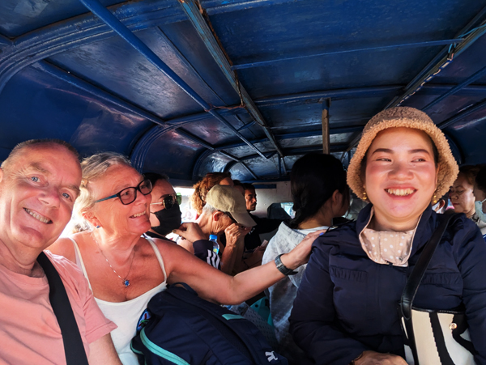
The journey was quite enjoyable. The songthaew had three other tourists on it but was mainly full of locals who had been to the market for an assortment of vegetables, bags of rice, shoes, etc. It would probably have started to get uncomfortable after a while but a few people got out along the way and the journey was only just over 70 minutes anyway. When we got to Champasak, the priority seemed to be to drop off the tourists at their correct hotels so we were dropped outside The Nakron River View at about 11:40.
Our room was not ready when we arrived but we were able to put our luggage in it and went out for a walk. There is not too much to see in Champasak - it is most famous for the temple about five miles away. However, is a nice enough place with a few small temples to wander round. We bought a few beers for later and returned to the hotel.
Our room was ready when we got back. It is a lovely room again. It is actually an apartment that can sleep five adults. We are only using the downstairs which has the bedroom and living area as well as a huge terrace on the bank of The Mekong. An ideal place to do nothing for a couple of days.
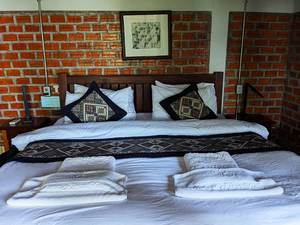
Spent the afternoon reading or lying around on the terrace or living area. We went for a short walk round the temple opposite the hotel in the evening but apart from that it was an afternoon of not doing a lot. We booked ourselves on a trip to Vat Phou for tomorrow and also decided that we would get the organised transfer from here on Monday. The staff at the hotel seem to know what they are doing and it means everything can be paid for by credit card. Roz also got confirmation that our room in Siem Reap is available one night earlier so we will travel there on the 5th instead of the 6th as originally planned. This gives us an extra day to recover from what could be a long day of travelling to get there.
We ate at the hotel restaurant in the evening. We had a beer on our terrace first and then had a few more with the meal. After eating, we started to watch the Swansea v Coventry game. However, the stream was not very good and neither was the game so we gave up on that after a while. We had a couple more beers while following the scores and got to bed when the games finished at midnight.
Sunday 2nd February We were up early enough to see the sun rising over the river in front of our room. We did not have breakfast included but ate in the restaurant anyway.
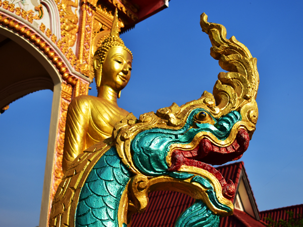
After eating we went and had a look at a couple of the Buddhist temples near our hotel. They both face East so are better viewed in the morning when the sun is on the front of them. Plenty more shiny gold Buddhas!
At 9, we were picked up by a tuk-tuk/songthaew and driven to Vat Phou. This ruined Khmer-Hindu temple complex is about 10km from where we are staying and the main reason people visit Champasak. We paid for our entry ticket and were taken by a golf buggy type thing to the start of the complex. The buildings here are in the same style as Angkor Wat but not on the same scale and nowhere near as spectacular. They are spread over terraces on the side of a hill inevitably with steep flights of steps between each terrace.
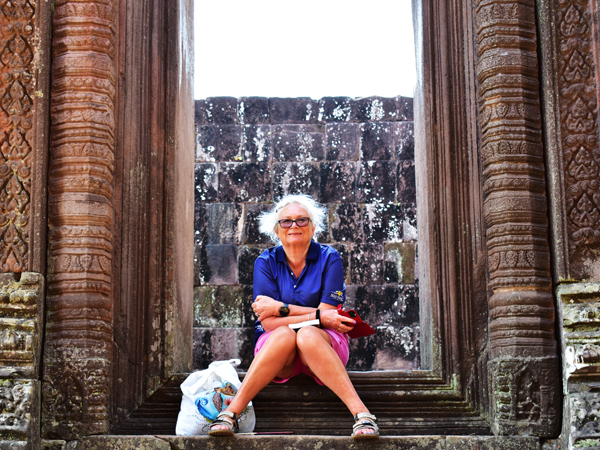
We spent an hour or so wandering round and climbing to the top. The ruins themselves were not that spectacular but the complex as a whole was well worth visiting and the views from the top were excellent. We found a path down that avoided the steps and returned to our tuk-tuk.
We had paid a bit more to also visit Hong Nang Sida. This was another temple about 2km South of Vat Phou. The temple here was not as good and was in no-where near as spectacular a setting as Vat Phou. Probably not worth the extra ₭100,000 we had paid to add it to our trip but it was not far out of the way. We were back at the hotel just after midday.
The French Bread is still very good in this part of the world so we had tuna baguettes for lunch and spent most of the afternoon on the terrace. We ate at the hotel restaurant again in the evening. We had an excellent meal of Lao sausages followed by fried rice served in pineapples. We had a couple of beers with the meal and were back in the room before 9.
Monday 3rd February After watching the sunrise again, we had breakfast in the restaurant, packed our bags, said goodbye to the kittens and checked out. We were picked up in a tuk-tuk along with three other guests and driven to the ferry stop behind the tourist information office about a mile away. Here we were transferred to a long-tail boat and taken across to the other side of The Mekong. We then had a wait of about 20 minutes before we were picked up by a minibus that had come down from Pakse. It was then a two hour journey to Nakasong.
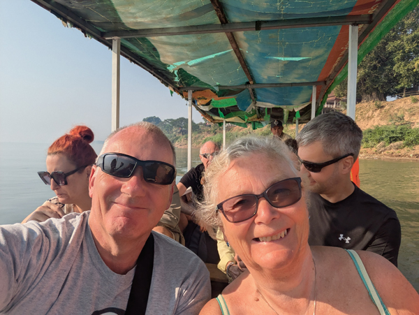
We were dropped in Nakasong at about 11:30 and walked down to the jetty where we were put onto another long-tail. This dropped most people off on Don Det and then continued to our final destination Don Khon. The boat dropped us off right at the steps of the hotel at about 12:30.
We were staying at Sala Don Khon Hotel and had booked a floating bungalow for two nights. This, as the name suggests, means that we are literally in a room floating on The Mekong. A lovely location although the balcony would be a bit precarious if on a session. We went out for a bit of a walk around the main part of the village. It is all pleasant enough with a bit more going on than at Champasak. After looking at one of the steam locomotives and the "historical bridge", two of the "main sights" here, we returned to the room with a couple of pineapple shakes.
Don Khon is another place that is very laid back and ideal for not doing a lot for a couple of days. After we had had our drinks on the balcony, Roz went and sat by the pool while I sat in the hammock/swing and finished my book. At 4, I went for a walk out to the waterfall that we will both visit tomorrow.
We had a couple of beers on our balcony before going out to eat. We ate in the hotel restaurant which seemed as nice as anywhere else and meant the food gets added to our bill which can be paid by credit card. The food was quite good without being brilliant. We had a couple more beers with the meal and one more on the balcony after we had eaten. We were in bed by about 9:30.
Tuesday 4th February We had breakfast included with our room here. Breakfast was OK without being anywhere near as good as we have had the last three days. After eating we hired bikes for the day. It is one of the main activities here as the islands are very flat and nothing is very far away. Bike hire cost us ₭30,000 each for the day (£1 = ₭27,000) so it is not too an expensive an activity.
We cycled first to the Southern end of the island where you used to be guaranteed to see Irawady dolphins. However, the last three of these have been killed so we had to make do with taking photos of the statue of them instead. We climbed up to the viewing platform which does not have a view anymore and also saw the second locomotive that was slightly less impressive than the one we saw yesterday. Not a great start to the sight-seeing!
We then cycled back to the main sight on the island - The Li Phi Somphamit Waterfalls. We paid ₭30,000 each to get in and were initially not that impressed. The were some falls but they were more like sections of rapids and were not that spectacular. After a bit of dithering, we decided to pay the additional ₭250,000 each to walk out onto the suspension bridges that take you above the falls. This seemed like a lot of money compared to everything else around here and we were unsure if it would be worth it.
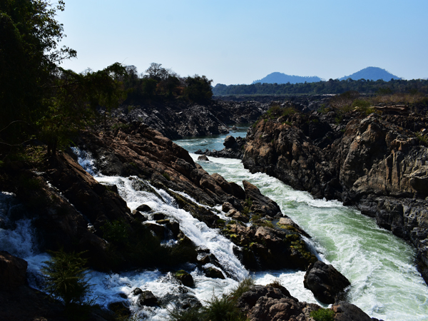
However, the bridges were quite modern, felt safe and took you over the better parts of the falls ending up on a large viewing platform so in the end, we were glad we paid the extra. There was hardly anyone else on the bridges when we walked out so most of the time we were on our own with no other tourists. The views of the falls here were a lot better and although they would probably be more impressive in the wet season, they were still pretty good.
After walking back across the bridges again, we returned to our bikes and headed back towards the hotel. We stopped for a quick look at Wat Khon Tai on the way and were back on our balcony before midday. We did not do much for the rest of the afternoon. We had planned on cycling round Don Det but decided on going to sit by the pool instead. I did go out for a walk to the other waterfalls (mainly to complete my steps for the day) but you had to pay to go in so I did not bother.
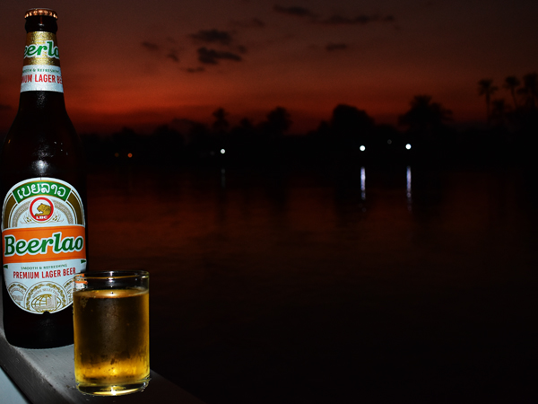
The evening was the same as yesterday i.e. a couple of beers on the balcony followed by a meal in the restaurant, then a final beer on the balcony before an early night.
Wednesday 5th February Roz spent a lot of the night in the bathroom with vomiting and diarrhea. It started after 11 and continued every half an hour or so until about 4:30. Ideal preparation for the 10.5 hour journey into Cambodia we had planned for today! I was awake by 6 and went for a walk over to Don Det leaving her to sleep. Things had settled down a bit by the time I was back but she was still not that well. We did not have too many options but to go for it anyway.
I went for breakfast on my own and then carried our luggage to reception. We were picked up by long-tail again and after a few stops were taken back to Nakasong. From here, were taken by minibus down to the Cambodian border about 20 minutes away.
Getting through the border was easier than expected. We got scammed into paying Baht200 each to get the Laos exit stamps in our passports but we were just about expecting this. We had to walk about 300m to get to Cambodian immigration and were expecting similar fees to be imposed there but they were all relatively friendly, our e-visas were accepted and we were through in about 5 - 10 minutes. 30 minutes after getting out of the minibus we walked into Cambodia.
We had to walk to a cafe for the next leg of the journey. We had been told we would have to wait here about an hour but once everyone was through, another minibus took us to Stung Treng. We were dropped at The Riverside Cafe by about midday. We then had a wait of over two hours for the next and final minibus. Roz was feeling a bit better and managed to eat something in the restaurant - French bread and Laughing Cow cheese - the same meal that we had when we first entered Cambodia 24 years ago. I went for a walk around Stung Treng to buy biscuits and to get dollars out of the cashpoint.
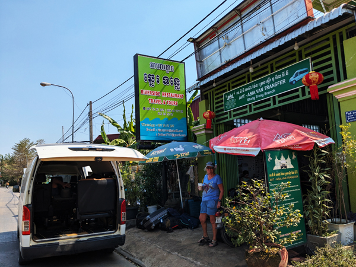
It was a five hour journey from here to Siem Reap and we finally departed at about 14:15. After about two hours, we had a toilet/refreshment stop at a garage. At this point, Roz had a bit of a relapse and I started to come down with the same thing. The final three hours of the journey were not great!
We were finally dropped in Siem Reap at 7:15 and got a tuk-tuk to our hotel which thankfully was only about 1.2km away. We had checked in by about 7:40 and neither of us had any desire to do anything but go to sleep. We had showers and were in bed by 8pm.
Thursday 6th February I spent the night with hourly trips to the toilet. I did not have the vomiting but apart from that, I seemed to have the same bug that Roz had 24 hours earlier. We had planned to go into Angkor Wat today. I had started feeling better during the night but was probably still not really up to walking round temples in 32° heat. We went to breakfast where I managed to eat some fruit and then I went back to bed. Roz went out for a walk but I was not up to such things.
Wan, our tuk-tuk driver from last night, turned up at the hotel at midday. We had told him that we may not be able to go anywhere but he had been quite insistent on giving it a go. We arranged for him to come back tomorrow at 8:00.
I did go out for a bit of a walk in the afternoon as there were a couple of things I needed to get before tomorrow and I was also determined to do my 10,000 steps even though I did not really feel up to it. I spent most of the day in the room. We had chosen to spend Roz's birthday in Siem Reap as the more upmarket hotels are a lot better value than the ones in Thailand. This meant that it was a very nice room to spend the day in feeling ill. We had booked a suite in Mane Village Suites for six nights and it really was a lovely place to stay.
Although we are getting better, neither of us felt like eating Asian food in the evening. Instead we walked to Burger King for burgers before having another early night.
Friday 7th February Woke up feeling better again. Neither of us are still anywhere near 100% but we did feel just about well enough to go and start looking at temples. We had asked Wan to come and pick us up at 8:00 and he was there when we left the hotel.
First stop was the ticketing centre. As with everything else in the area, it bore no resemblance at all to where we bought tickets 24 years ago. However, it was all quite efficient and there were no queues. We bought tickets that enable us to visit the temples for any three days in the next ten for US$62 each. We were then taken to Angkor Wat.
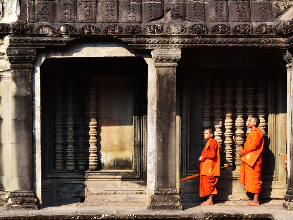
There were a few changes here as well. You are no longer able to climb up the steep parts of the temples but they have installed slightly less steep stairs so the upper parts can still be accessed. We were there for a couple of hours and walked round most of the temple and up to the highest point. All very good again.
We did not want to overdo it today as walking round in the heat was very hard work but we had planned on one more temple. We had thought about going to Angkor Thom next but decided to leave that until tomorrow and visit Ta Prahm instead. This was excellent. A lot of it has been cleaned up since we were here last but there are still plenty of spectacular tree formations forcing their way through the ruins. Although it was very busy there, there were plenty of places to get away from the tour groups and it was a very enjoyable place to wander around.
I was flagging a bit by the time we came out so we decided it was time to return to the hotel. We stopped at Prasat Kraven, a much smaller temple not far from the road as we were going past it anyway, and were back at the hotel by about 1:30. We went out and got bread and "Cheddar" cheese for lunch and then spent an hour or so by the pool.
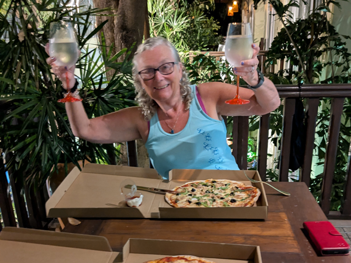
We had already decided to postpone this evenings birthday celebrations as neither of us were up to eating a large meal and we were certainly not ready for alcohol yet. We had a video call with my Mum, Jane and Sid at 6 and then Roz opened her presents. Once again, we did not feel like Asian food so used the Grab app to get a couple of pizzas delivered. The pizzas were excellent. We ate them on the balcony with a couple of glasses of water. Both in bed again by 9. Not the most lively of birthdays but reasonably enjoyable under the circumstances.
Saturday 8th February We were both awake by about 5:30 and feeling just about 100% well again. We were able to enjoy breakfast and were ready to be picked up by Wan again at 8.
We had decided to visit Angkor Thom today and were taken straight into Bayon, the temple in the centre of the old city. This is the highlight of Angkor Thom but we went there first to try and avoid the crowds. The temple was superb and I was probably more impressed with it than the two big ones we went to yesterday. The top level of this one was closed for renovation but we were able to get to the second level and walk around while being watched by the 54 faces that make the place so photogenic.
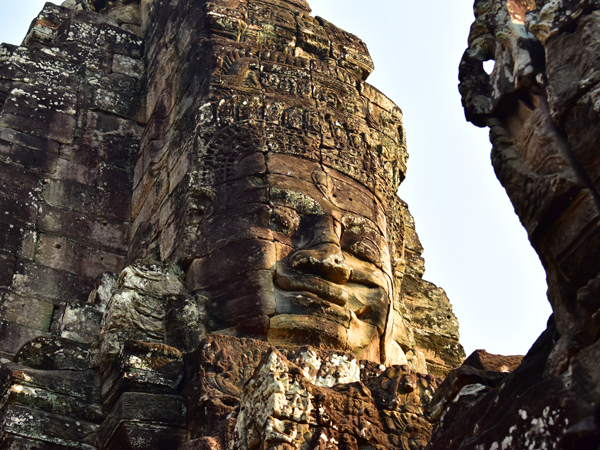
It may be that I enjoyed this temple more than the others because I was feeling better today but either way, it was a stunning place to visit and we did manage to get round it while it was relatively quiet. We came out of Bayon and walked round a couple of the other sights within Angkor Thom. We went up as high as we could in Bophoun and then walked out to the Terrace of the Leper King and along the Terrace of the Elephants.
We left Angkor Thom via the Northern Gate and headed next to Preah Khan. Quite enjoyed this one. Next stop was Neak Poan, a not very impressive temple in the middle of a large lake. It involved a long walk out on a walkway with no shade and was not really worth it. Our final temple for today was Ta Som. The highlight of this temple was a massive tree whose roots had taken over one of the entrances and was supposed to be one of the most iconic photo spots in the area. However, the tree had been cut down four years ago and the entrance was held up by scaffolding so not quite the photo opportunity I had hoped for.
We did stop at one other temple on the way back - Pre Rup Temple - This looked quite impressive but we only took photos of it from the road. We were back at the hotel by about 1:15 again.
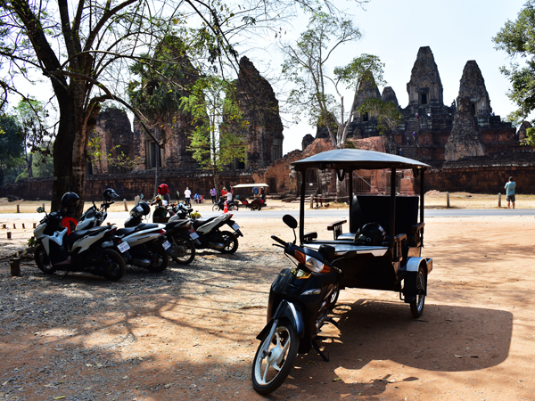
We had the remains of last nights pizza on the balcony for lunch and spent most of the rest of the afternoon by the pool. I did go out and get my haircut but did not do a lot else.
We made it out of the hotel to eat tonight. We started walking towards Pub Street and walked through a very backpacker type area to get there. We found "Pasta la Vista" which we both liked the look of and stopped and ate there. The food was very good although my Penne Arabiata was probably the spiciest version of this dish I had ever eaten which was not ideal after the last few days!
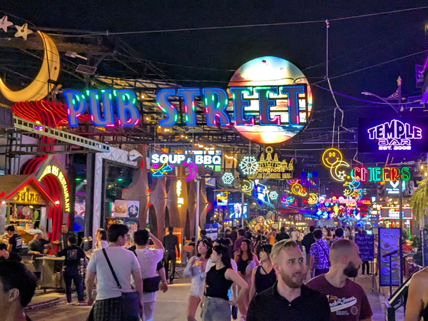
We continued walking to Pub Street. We had not planned on stopping anywhere and were certainly not thinking about alcohol but we found a sports bar showing the Sunderland v Watford game which had just kicked off. We got seats where we could see the game and had a jug of beer which we managed to make last for the whole 90 minutes. There were a few other Sunderland fans in there and it turned into quite an enjoyable evening. We walked straight back to the hotel after the game finished so were still in bed by 10.
Sunday 9th February We were awake early again and were able to join the video call for ten minutes or so before breakfast. We were picked up by Wan again at 8 and went off for our third and final day of seeing temples. We were probably just about at our limit for seeing temples but Wan had suggested a trip to the Roulos Temples.
This is a group of three early Khmer temples about 13km West of Siem Reap. We started at Bakong, the biggest of the three. This was nice as we had it almost entirely to ourselves. There were one or two others around but for the most part we could wander around all five levels on our own. Next was Preah Ko. This was probably the least interesting of the three, not helped by the fact that one of the three front towers was covered in scaffolding.
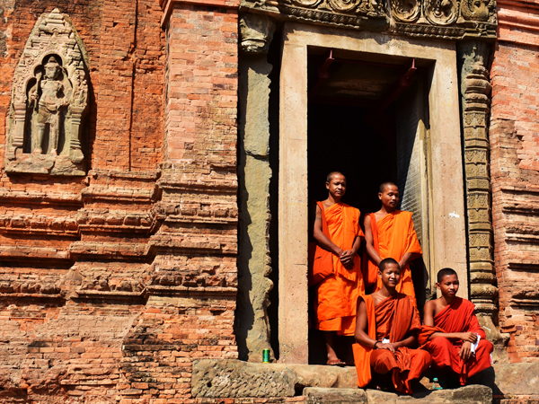
Lolei was similar to the previous one but smaller with only four towers. It did however have a monastery very close to it and also another nearby pagoda that seemed to be hosting some sort of celebration. This meant that there were plenty of monks wandering around adding a bit of colour to our photos.
This concluded our temple visits and we got Wan to take us back to Siem Reap. The temples have all been very good again but it was time to call it a day. We were back at the hotel by 11:15. We paid Wan $100 ($30 a day + tip) and arranged for him to come and pick us up again to take us to the airport on Tuesday.
We had lunch on our balcony again (final remains of the pizzas with a couple of pies from 7-Eleven). I went out for a walk round the centre of Siem Reap and out to where we will be eating tonight. The rest of the afternoon was spent by the pool.
We had a table booked tonight at the "Kanell Dinner Show". This was an "Asian Fusion Deluxe Set Menu" with traditional Cambodian entertainment and had been recommended to us by Baldy. It had been initially booked for Roz's birthday but neither of us would have been up to eating that much food so we had postponed it by a couple of days. It was not the sort of thing that we would usually go to but had decided to give it a go.
We started the delayed celebrations with a bottle of wine on the balcony at 6. We went out just before 7 and got a tuk-tuk to Kanell which is about 2.5km away on the other side of the river. After our welcome drinks, we were shown to our table. The place was not that full and we were fairly near the front. We ordered a bottle of wine and were given our first couple of courses before the show started at 7:30.
••● AMUSE BOUCHE ●••
Crispy rice crackers with savory pork and shrimp paste dip
••● APPETIZER ●••
Grilled fresh river prawn salad, winged bean, toasted sesame, jicama and orange sauce
••● SOUP ●••
Smoky lemongrass, galangal and sweet chili paste, cooked with pumpkin & tomatoes creamy sour soup topped with seafood dumpling
••● REFRESHER ●••
Sweet basil seed and kaffir lime juice smoothy
••● FIRST MAIN COURSE ●••
River fish fillet, cooked in amok sauce, tamarind juice, served on fried green bass leaf
••● SECOND MAIN COURSE ●••
Roasted chicken roll, green jack fruit and banana blossom, served with prahok & red ant sauce, organic Jasmine rice
••● DESERT ●••
Young coconut jelly, top of passion fruit and palm caramel sorbet
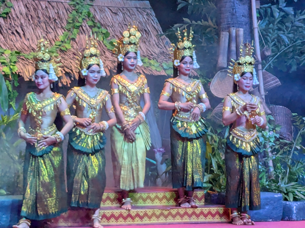
The show consisted of eight different performances which were either dancing, martial arts displays or some sort of combination of the two. The remaining courses of our meal was served between the acts. The food was good and was served quite quickly so we did not have long waits between the courses. The dancing was reasonably entertaining and all the costumes were excellent. The whole thing was very well done and we both enjoyed it more than we were really expecting to. We are not really into watching that sort of show but none of it went on for too long and we were never bored with it at any point.
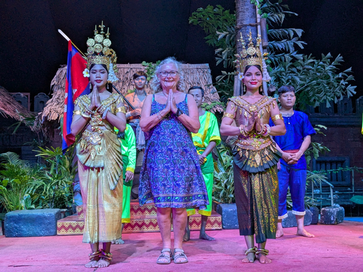
Once the show had finished, Roz had Happy Birthday played for her and was given a plate of fruit. We were then all able to go up on stage for photos. A good night out.
Once the show had finished and we had paid the bill (US$109), we walked back to our side of the river and headed for a small craft beer place that we had walked past a few times. This had only opened a few days ago and only had two beers on but the one we tried was quite good so we had a couple in there before walking back to the hotel. We had a couple more glasses of wine in the room before bed.
Monday 10th February With our sight-seeing completed, we had a day without a lot to do today. After breakfast we went out for a walk. We went back to the river and had a look round the pagoda I had seen briefly yesterday. We also walked out to see the guest house that we had stayed in 24 years ago but this had changed beyond recognition along with everything else so we were unsure whether or not we were actually in the right place.
We came back a more direct route and returned to our balcony to eat the chocolate brownie we had bought on the way. Most of the rest of the day was spent by the pool.
We had a few drinks again in the evening. We had a bottle of wine on the balcony and then returned to Pasta la Vista. Roz had pasta again while I had a very good pizza. This time, our meals were accompanied by four Mojitos. Cocktails, and alcoholic drinks in general are very cheap in Siem Reap and these were $2 each.
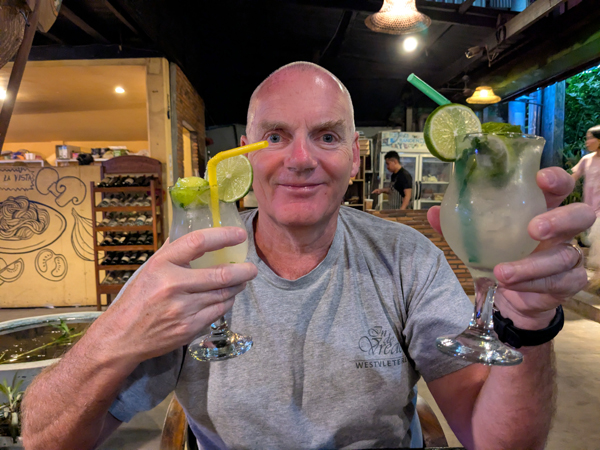
After eating we had a walk along Pub Street. We found somewhere that had a table right on the edge of the street where cocktails were 2 for $5 so we sat down and spent the rest of the evening drinking Pina Coladas. I don't think Pub Street is ideally our sort of place but it was a nice enough spot to watch the crowds walking past and we were both happy with the drinks. We had planned to go back to the craft beer pub but we ended up having three cocktails each by which time it was time to return to the hotel. We had one more glass of wine before bed.
Tuesday 11th February We had to check out today at 1pm. I went for a walk along the river after breakfast and then joined Roz by the pool for an hour or so before showering and packing.
We had booked a taxi to the airport through Wan and the driver turned up at exactly 1:30. It took just over an hour to get to the new Siem Reap airport which is 45km out of town. We checked in and went through security and then had another visit to Burger King for lunch.
Our Air Asia flight to Phuket was supposed to leave at 16:50 and actually left about 10 minutes early. We were sat in different parts of the plane but it was not a long flight so it did not really matter. We landed in Phuket at 18:05 which was about 30 minutes ahead of schedule. Immigration was not too bad and my luggage was on the belt by the time we were through. We walked out of the airport and after walking for a few minutes, found a tuk-tuk that would take us to Nai Yang for ฿100.
Reception was reasonably efficient for a change and by 19:05, we were in our room, four doors along from where we were two weeks ago. We did not really know what time we would be arriving but as we were earlier than expected, we decided to have a few drinks. After a bit of unpacking, I went along to the supermarket to buy provisions and we started with a few drinks on the balcony.
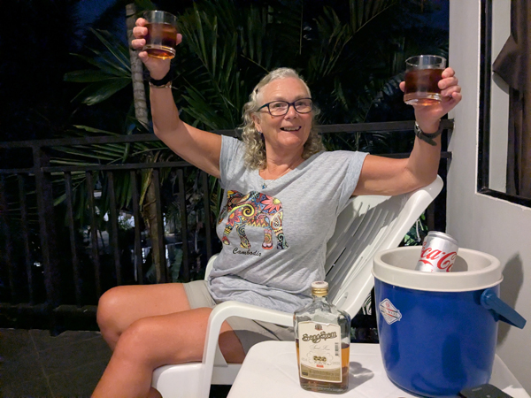
We ate at Marina Seafood, a place we used to eat at a lot when there were permanent restaurants on the beach but have not been to for a few years. We got through a bottle of Sang Som with our meal and then returned to the balcony to finish a second one.
Wednesday 12th February After all the activity of the last couple of weeks we now have six days without really having anything to do. We had considered hiring a car for a couple of days but decided that we are quite content spending the time here. We were not too badly hungover so after breakfast we were able to go straight to the pool.
I went for a walk at midday but most of the day was spent reading either in the room or at the pool.
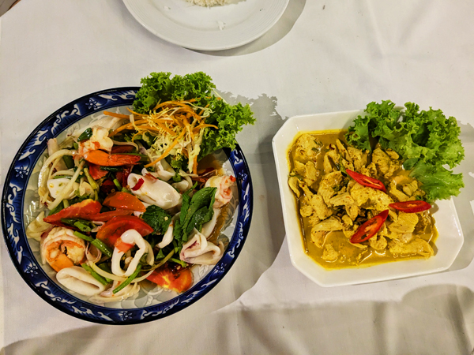
We went out just before 7 and walked along the beach to Rotcharin Seafood. The food in here was excellent tonight. We were having a night off alcohol so walked out to the nearest 7-Eleven after eating and then returned to the room.
Thursday 13th February A healthy start to the day again. Roz got up and went for a swim. I ran 5.3 km and managed it in about 70 seconds less than the same run a few weeks ago which I was quite surprised about. We had breakfast and then went to the pool for a couple of hours.
At 1ish, we had a trip out to buy wine for tomorrow and returned to our balcony to eat spinach pies and banana shakes for lunch before returning to the pool. The only other thing we did was to go across the road and get a couple of take-away fried rices for tea. Another early, alcohol free night.
Friday 14th February Started the day with a run/swim again. Then it was breakfast and the rest of the morning by the pool. We are both quite happy not doing a lot so have ruled out any ideas of day trips or excursions. We will spend the last few days of our holiday lazing around and drinking too much.
I went out for a walk to buy Sang Song and more spinach pies for lunch. Roz went out and bought the banana shakes to go with the pies. We ate lunch on the balcony before going back to the pool for another hour or so.
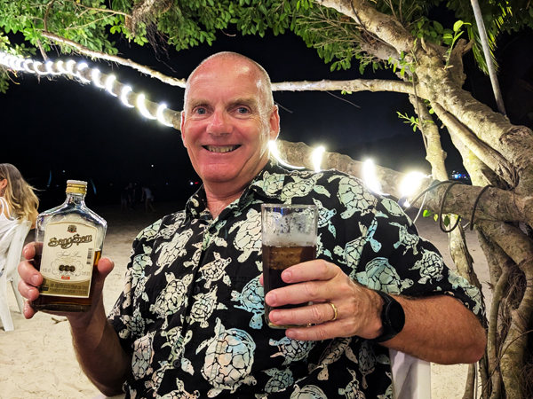
We took a couple of glasses of wine down to the beach for the sunset and then returned to the room for showers. We got through just over a bottle more on the balcony and then went out to eat. We ate at Rotcharin Seafood and got through a bottle and a half of Sang Som with the meal. We poured drinks when we got back but the evening came to an end when Roz fell over and bumped her head and hurt her shoulder!
Saturday 15th February No early morning exercise today! Roz woke with a sore head and could not fully move her arm but was otherwise OK. Neither of us were too badly hungover. We had breakfast and spent the rest of the morning by the pool. Just before midday, we went for a walk through the national park. We bought lunch and more Sang Som on the way back. Afternoon by the pool again.
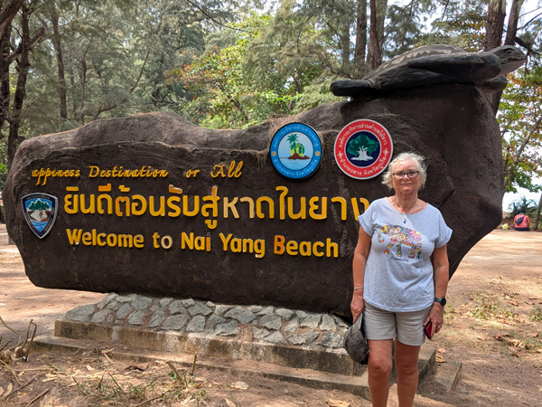
We had another session in the evening. Usual sort of thing. We had a few drinks on the balcony before walking to Rotcharin Seafood again. We had a bottle and a half of Sang Som with our meal and then returned to the room for the football. We were able to watch the first half of Stoke v Swansea but did not see the second half. I can not remember if this was because I could not get the stream to work or because the first half was so poor that I just gave up. I just about managed to stay awake for the final score but this is all a bit of a vague memory.
Sunday 16th February A similar day to yesterday. Roz's shoulder is getting better but she is still unable to do front crawl. We had breakfast and then spent the morning by the pool. I went for a walk at midday and came back with spinach pies and banana shakes which we consumed on the balcony. The afternoon was spent back at the pool.
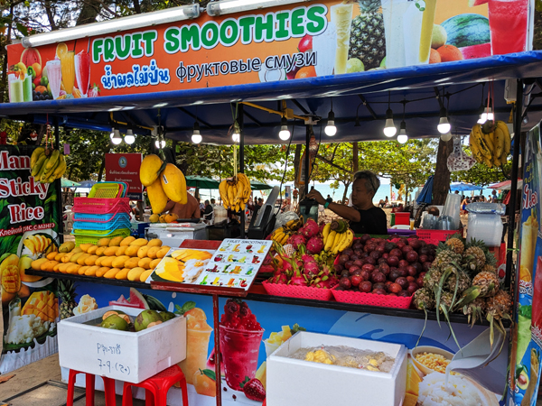
We went for a walk along the beach to look at the sunset which was a lot better than the one a couple of days ago. We were not drinking tonight so bought fried rice from over the road and ate it on the balcony. An early night.
Monday 17th February We were able to get up early and exercise again this morning. Roz was just about able to swim and managed a few lengths of front crawl so her shoulder is starting to improve. I went for my final 5km of this trip. After breakfast we spent the morning by the pool. I went for a walk at midday to buy Sang Som for tonight. I was unable to get pies for lunch so we had chocolate and banana pancakes instead.
We did not go to the pool in the afternoon mainly due to the "Pool Party". We had thought of going to it as the cocktails were cheap but it turned out to be almost four hours of shit music played at deafeningly loud volume. We spent most of the afternoon in the room!
We started on our final Sang Som session on the balcony at 6:30. We had known since Friday that rain was forecast for this evening and it duly arrived at about 7:30 which delayed us going out to eat for a while. It also meant that we had got through a bottle and a half of Sang Som before going out. We walked to Rotcharin Seafood when the rain eased. We nearly did not get a table as they were reluctant to serve people on the beach but they let us have a table when we told them it was our last night.
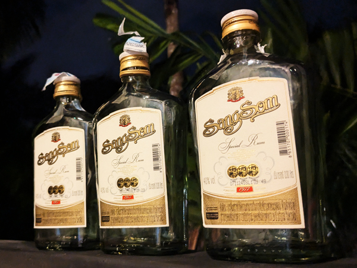
It was another enjoyable meal. We were sat under an umbrella so the light rain did not matter and the lightning over the sea was quite spectacular to watch. We had another bottle of Sang Som with the meal and then returned to the hotel to finish the remaining half bottle. Got to bed by about 11.
Tuesday 18th February Once again, we were not too hungover considering what we had drunk last night. We went to breakfast and then spent the morning by the pool. We had to check out at 1pm and then had another hour or so at the pool before our taxi to the airport at 14:30.
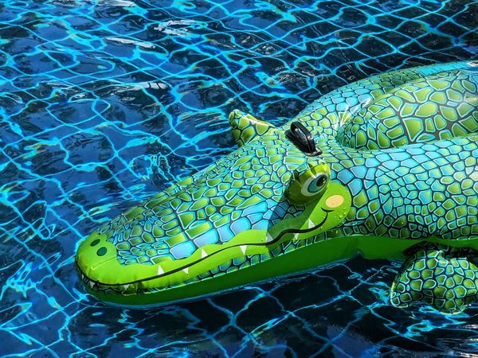
The check-in queues for Malasia Airlines were quite long and slow moving initially but all suddenly seemed to speed up and we were through into the departure area with more than an hour to wait for our 16:55 flight to KL. The flight left just about on time and we landed at KLIA at about 19:30. There were long queues at immigration again but for some reason, one of the queues was completely empty. We had already filled in our on-line forms so walked straight up to the desks, got our passports stamped and were checking into the Sama Sama Hotel by 20:00.
We got into our room, had showers and walked back into the airport to eat. We managed to find the food court this year and had very good curries before returning to the hotel for an early night.
Wednesday 19th February We were up just after 6 and checked out of the hotel by 6:30. We walked to the bus station so we could have a final breakfast of roti canai. We were in the terminal just after 7. Our bags were checked in all the way through from Phuket to London and we already had our boarding passes so we just had to get through immigration before getting the bus out to the satellite. All as chaotic as usual at KLIA but we were at the gate with plenty of time.
We were on exactly the same flight home as last year. We left just after the scheduled time of 9:25. The flight was not full again so we had three seats in the middle of the plane between us. We had a couple of glasses of wine after the first meal but that was it. A fairly uneventful flight of just under 14 hours.
We landed at Heathrow at 4ish. It took a while to get to the gate and to get our luggage but everything else was fairly smooth including the return of the car. Their were delays on the M25 to get onto the M3 and we stopped to buy a few things in Basingstoke. Back in Kingsclere just before 7.